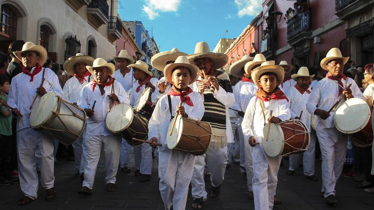
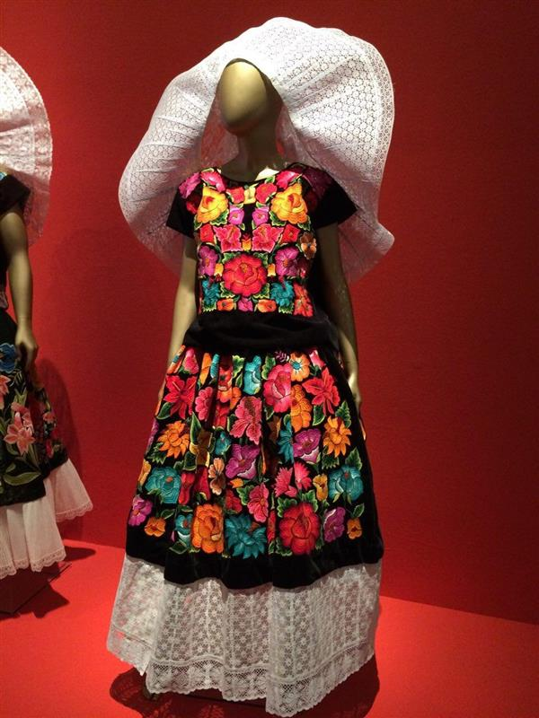

GENTE Y TRAJE TIPICO
Oaxaca es un estado con una gran diversidad étnica. Alberga 16 grupos indígenas reconocidos, entre ellos los zapotecos, mixtecos, mazatecos, mixes, chatinos y triquis, entre otros. Estas comunidades conservan sus lenguas, vestimenta, costumbres y organización social tradicional. Los trajes típicos varían según la región. Las mujeres suelen vestir huipiles bordados, faldas largas y rebozos de colores vivos. En el Istmo de Tehuantepec, los trajes tradicionales incluyen blusas con encaje, flores y joyería de oro. Los hombres, especialmente en las comunidades rurales, visten con ropa blanca, sombreros de palma y huaraches.
 